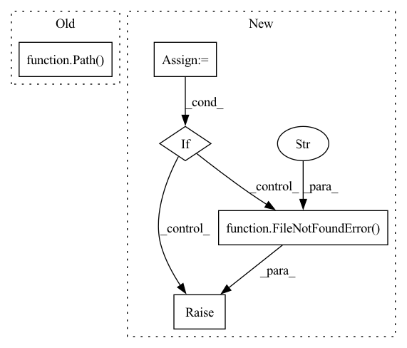

Pattern ID :28135
Before Change
splits = json.load(f)["splits"]
for k in splits:
dataset_dict_split_path = (
dataset_dict_path.split("://")[0] + "://" + Path( dest_dataset_dict_path, k) .as_posix()
if is_remote_filesystem(fs)
else Path(dest_dataset_dict_path, k).as_posix()
)After Change
path_join = os.path.join
dataset_dict_json_path = path_join(dest_dataset_dict_path, config.DATASETDICT_JSON_FILENAME)
dataset_state_json_path = path_join(dest_dataset_dict_path, config.DATASET_STATE_JSON_FILENAME)
dataset_info_path = path_join(dest_dataset_dict_path, config.DATASET_INFO_FILENAME)
if not fs.isfile(dataset_dict_json_path):
if fs.isfile(dataset_info_path) and fs.isfile(dataset_state_json_path):
raise FileNotFoundError(
f"No such file: "{dataset_dict_json_path}". Expected to load a `DatasetDict` object, but got a `Dataset`. Please use either `datasets.load_from_disk` or `Dataset.load_from_disk` instead."
)
raise FileNotFoundError(
f"No such file: "{dataset_dict_json_path}". Expected to load a `DatasetDict` object, but provided path is not a `DatasetDict`."
)
In pattern: SUPERPATTERN
Frequency: 3
Non-data size: 5
Instances Fragment ID: 83074355
Project Name: huggingface/datasets
Commit Name: 20703458e3c42ee7bfc1a26e47805c0db4dda2d6
Time: 2023-02-23
Author: alvarobartt@yahoo.com
File Name: src/datasets/dataset_dict.py
M Class Name: DatasetDict
N Class Name: DatasetDict
M Method Name: load_from_disk(4)
N Method Name: load_from_disk(4)
M Parent Class: dict
N Parent Class: dict
M File Name: src/datasets/dataset_dict.py
N File Name: src/datasets/dataset_dict.py
M Start Line: 1288
M End Line: 1307
N Start Line: 1286
N End Line: 1316
Before Change
print(f"The model {model} is not supported.")
continue
embeddings = embedding_models.compute_database_embeddings(db, embedding_model)
path = Path( args.out_dir) / f"{model}.npy"
np.save(path, embeddings)
After Change
import numpy as np
from .. import embedding_models
out_dir = pathlib.Path(args.out_dir)
database_path = pathlib.Path(args.database_path)
bsv_checkpoints = pathlib.Path(args.bsv_checkpoints)
if not out_dir.exists():
raise FileNotFoundError(f"The output directory {out_dir} does not exist!" )
if not database_path.exists():
raise FileNotFoundError(f"The database {database_path} is not found!")
engine = sqlalchemy.create_engine(f"sqlite:////{database_path}") Fragment ID: 83074354
Project Name: bluebrain/search
Commit Name: fde937247e8021be3bb06189256600622cd6b773
Time: 2020-07-13
Author: Stannislav@users.noreply.github.com
File Name: src/bbsearch/entrypoints/embeddings_entrypoint.py
M Class Name: AnonimousClass
N Class Name: AnonimousClass
M Method Name: main(0)
N Method Name: main(0)
M Parent Class:
N Parent Class:
M File Name: src/bbsearch/entrypoints/embeddings_entrypoint.py
N File Name: src/bbsearch/entrypoints/embeddings_entrypoint.py
M Start Line: 36
M End Line: 56
N Start Line: 36
N End Line: 61
Before Change
fs = fsspec.filesystem("file")
dest_dataset_dict_path = dataset_dict_path
for k in json.load(
fs.open(Path( dest_dataset_dict_path, "dataset_dict.json") .as_posix(), "r", encoding="utf-8")
)["splits"]:
dataset_dict_split_path = (
dataset_dict_path.split("://")[0] + "://" + Path(dest_dataset_dict_path, k).as_posix()After Change
fs = fsspec.filesystem("file")
dest_dataset_dict_path = dataset_dict_path
dataset_dict_json_path = Path(dest_dataset_dict_path, config.DATASETDICT_JSON_FILENAME).as_posix()
dataset_info_path = Path(dest_dataset_dict_path, config.DATASET_INFO_FILENAME).as_posix()
if fs.isfile(dataset_info_path) and not fs.isfile(dataset_dict_json_path):
raise FileNotFoundError(
f"No such file or directory: "{dataset_dict_json_path}". Expected to load a DatasetDict object, but got a Dataset. Please use datasets.load_from_disk instead."
)
for k in json.load(fs.open(dataset_dict_json_path, "r", encoding="utf-8"))["splits"]:
dataset_dict_split_path = (
dataset_dict_path.split("://")[0] + "://" + Path(dest_dataset_dict_path, k).as_posix()
if is_remote_filesystem(fs) Fragment ID: 83074359
Project Name: huggingface/datasets
Commit Name: 1ea2239a6ea4ca8f4b1d314ccc7d7c2e03257b6d
Time: 2021-06-08
Author: 42851186+lhoestq@users.noreply.github.com
File Name: src/datasets/dataset_dict.py
M Class Name: DatasetDict
N Class Name: DatasetDict
M Method Name: load_from_disk(3)
N Method Name: load_from_disk(3)
M Parent Class: dict
N Parent Class: dict
M File Name: src/datasets/dataset_dict.py
N File Name: src/datasets/dataset_dict.py
M Start Line: 723
M End Line: 723
N Start Line: 721
N End Line: 729